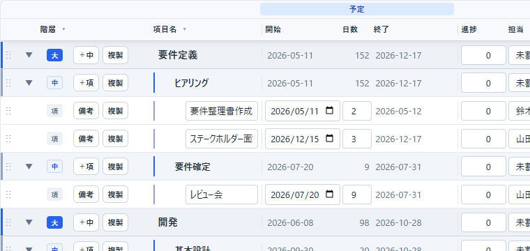
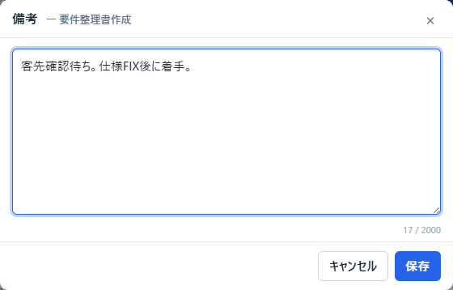
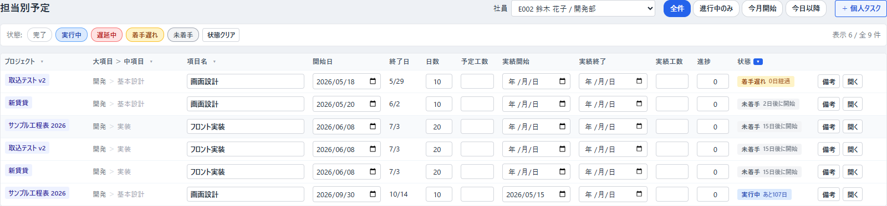
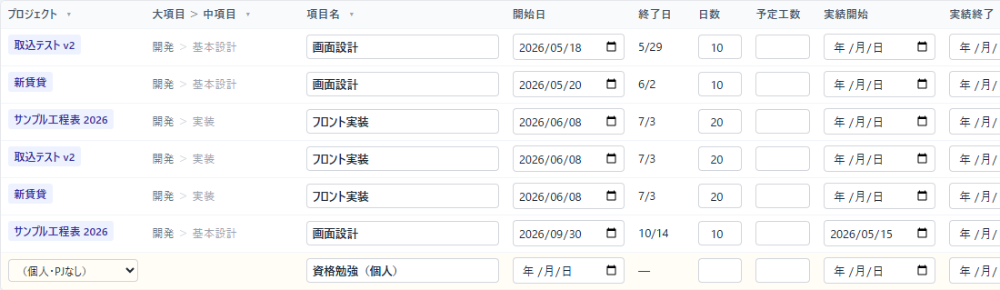
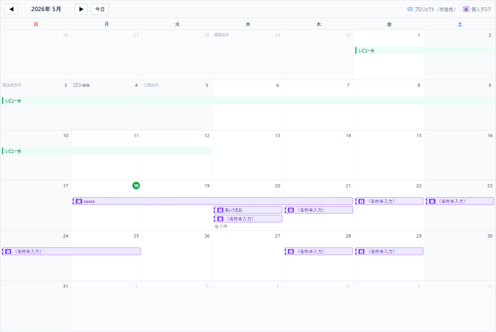
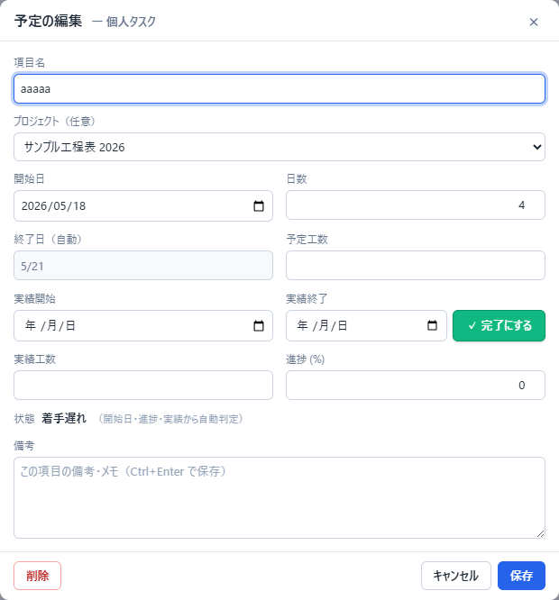

WBS Web 操作マニュアル
プロジェクト工程表（ガントチャート）と担当別予定の作成・更新手順
1. はじめに
本ツールは、エクセル版「工程マイルストーン」の置き換えを目的とした Web 工程表です。
ブラウザから社内サーバへアクセスして使用します。
| 項目 | 内容 |
|---|---|
| URL | サーバ管理者から配布された URL（例: http://<サーバ名>:5000/） |
| 推奨ブラウザ | Chrome / Edge の最新版 |
| 同時編集 | 本バージョンでは想定していません。複数人で同時に同じプロジェクトを更新しないでください。 |
① 社員マスタ → ② プロジェクト作成 → ③ メンバー設定 → ④ タスク登録
社員個人の予定（プロジェクトに紐づかないものを含む）は「担当別予定」画面（第 4 章）で管理します。
2. 画面の基本構成
画面上部に共通ナビゲーションがあります。
| メニュー | 役割 |
|---|---|
| プロジェクト | プロジェクトの一覧・作成・各プロジェクトのガントへの入口。 |
| 担当別予定 | 社員ごとに、割り当てられたタスクと個人タスクを一覧・直接編集する画面（第 4 章）。 |
| 組織マスタ | 顧客／社員／プロジェクトを束ねる組織（階層）の一覧・追加・編集。CSV 取込で自動増加・自動紐付け。 |
| 顧客マスタ | プロジェクトに紐づける顧客の一覧・追加・編集。組織で絞込み・割当可。 |
| 社員マスタ | 担当者として登録できる社員の一覧・追加・編集。組織で絞込み・割当可。 |
| 休日設定 | 土日以外の休日（祝日・特別休暇など）の登録。 |
| ダウンロード | 配布物・出力ファイルの取得。 |

3. 操作手順（プロジェクト／ガント）
3.1社員マスタを登録する
タスクの担当者として割り当てる社員を、まず社員マスタに登録します。
- 上部ナビの「社員マスタ」をクリック。
- 右上の「+ 新規追加」ボタンを押すと、登録ダイアログが開きます。
- 必要項目を入力して「保存」を押す。


| 項目 | 説明 | 必須 |
|---|---|---|
| 社員コード | 未入力で E001 から自動採番されます。既存の番号体系がある場合は任意のコードを入れられます。 | — |
| 氏名 | 表示用の氏名。 | ○ |
| フリガナ | 検索のヒット率が上がります。 | — |
| 所属 / 役職 | 表示・検索用。 | — |
| メール | 将来の通知連携用（現状は表示のみ）。 | — |
| 在籍開始 / 在籍終了 | 退職した方は「在籍終了」を入力するか、有効チェックを外すと、新規割当の候補から外れます（既に割当中のタスクには引き続き名前が残ります）。 | — |
| 休日出勤 | 休日も作業対象に含めて稼働するメンバーにチェック（将来の計算で参照）。 | — |
| 有効 | 外すと「無効社員」として一覧表示時はグレー表示、新規割当候補から除外されます。 | — |

「有効のみ」のチェックを外すと退職者も含めた全社員を表示できます。
3.2休日を登録する
土日に加えて休業日として扱いたい日付（祝日・年末年始など）を登録すると、 ガント上の表示と、後述の日数計算（平日カウント）に反映されます。
- 上部ナビの「休日設定」をクリック。
- 用途に合わせて 4 つの入力欄を使い分け：
- 日付指定: 1 件ずつ登録（例: 設立記念日）。
- 期間一括: 開始 〜 終了日の連続日を一気に登録（例: 夏季休業 8/13 〜 8/16）。
- 祝日プリセット: 指定した年の日本の祝日 16 件を一括投入。
- CSV 取込:
YYYY-MM-DD,名称形式の複数行を一気に登録。

3.3プロジェクトを作成する
- 「プロジェクト」ページの上部「新規プロジェクト」セクションで、必要に応じて顧客を選び、プロジェクト名を入力。
- 「作成して開く」を押すと、そのプロジェクトのガント画面に遷移します。


「削除」を押すと、配下のタスクと、プロジェクトメンバー設定も一緒に削除されます。
3.4プロジェクトに表示するメンバーを選ぶ
社員マスタには全社員が登録されますが、各プロジェクトで 担当ドロップダウンに出す社員はプロジェクトごとに選択します。
- ガント画面の上部「メンバー」行で「メンバー管理」ボタンをクリック。
- ダイアログで、参加させたい社員にチェックを入れる。
検索ボックスで社員を絞り込み、「表示中を全選択」で一括チェックも可能。 - 「保存」を押す。


ダイアログの該当行に「⚠ 割当中」と表示され、担当者バーやドロップダウンでは「（メンバー外）」とラベル付けされます。
3.5タスクを登録する（3 階層）
タスクは 大項目 → 中項目 → 項目 の 3 階層で登録します。
日付・日数・担当を入力できるのは一番下の「項目」だけで、大項目・中項目は配下の集計（開始＝最小、終了＝最大、工数＝合計など）が自動で表示されます。
各行の操作ボタンは「階層」列と「項目名」列の間にまとまっています（「削除」だけは行の右端）。
| ボタン | 位置 | 役割 |
|---|---|---|
| ＋中 / ＋項 | 階層と項目名の間 | その行の下に中項目／項目を追加（大項目→＋中、中項目→＋項）。 |
| 備考 | 階層と項目名の間（項目のみ） | 備考ポップアップを開く（3.11）。 |
| 複製 | 階層と項目名の間 | その行を配下ごと複製（3.8）。 |
| 削除 | 行の右端 | その行を削除。 |
- 画面右上の「＋ 大項目」を押すと、新規行が直接追加され、名前欄に自動でフォーカスされます。そのまま名称を打ち込んでください（Tab か別セルクリックで確定）。
- 大項目の「＋中」ボタンで「中項目」を追加。
- 中項目の「＋項」ボタンで「項目」を追加。
- 項目では 開始日 / 日数 を入力します（終了日は土日・休日をスキップして自動算出されます）。 必要に応じて担当者・進捗・工数を入力します。


（名称未入力） とプレースホルダ表示され、後からまとめて記入できます。
3.6日付・期間を変更する／日付のコピー＆ペースト
変更方法は 2 通りあります。
| 方法 | 操作 |
|---|---|
| ① 直接入力 | 一覧の「開始日」「日数」セルに直接入力する。 |
| ② バーをドラッグ | ガント右側のバーを左右にドラッグして開始日や期間を変更する。バーの右端をつかむと長さだけ変更できる。 |
- コピー: 日付セルにフォーカスして Ctrl+C。
2026/05/18形式でコピーされます（自動計算の終了日セルはクリックで選択 → Ctrl+C）。 - 貼り付け: 日付セルで Ctrl+V。
2026-05-18/2026/5/18/20260518など各種形式や、Excel セルからの貼り付けに対応します。
3.7行を並び替える
一覧側の行先頭のグリップ（⋮⋮ アイコン）を掴んで、ドラッグ＆ドロップで順番を入れ替えられます。
同じ親（大項目→中項目、または中項目→項目）の中での並べ替えが基本です。
3.8行を複製する
似たタスクを作るときは「複製」が便利です。各行の「複製」ボタン（階層と項目名の間）を押すと、その行を配下ごとまるごとコピーし、元の行のすぐ後ろに同じ親・同じ階層で挿入します。
| 複製対象 | 結果 |
|---|---|
| 大項目 | 配下の中項目・項目もすべてコピーされる。 |
| 中項目 | 配下の項目もコピーされる。 |
| 項目 | その 1 行をコピー。 |
3.9後続タスクの自動シフト（連動）
あるタスクの開始・期間を後ろにずらすと、同じ中項目内で、すぐ後ろにくっついている後続タスクが自動で同じ日数だけ後ろにずれます（カスケード）。
連動する後続タスクは 変更したタスクと同じ日数だけ平行移動 します（直列に並べ替えるのではありません）。 たとえば 3 つの項目がいずれも 5/15・1 日で並んでいるとき、先頭を 5/16 に変更すると、 残り 2 つも同じ +1 日ずれて 3 つとも 5/16 になります（5/16・5/17・5/18 のように 1 日ずつ後ろには並びません）。
| 動く条件 | 動かない条件 |
|---|---|
| 同じ中項目で、変更前のタスクと 重なる もしくは 連日（土日休日を挟む隣接含む）の後続タスク | すでに間が空いている後続タスク、別の中項目のタスク |
3.10進捗と実績を入力する
「実績」列を表示にすると、項目に実績開始日・実績終了日を入力できます。 進捗 % は一覧上の進捗セルにも、ガントバーをドラッグでも変更できます。

3.11タスクに備考を登録する
項目（一番下の階層）には自由記述の備考を登録できます。
- 項目行の「備考」ボタン（階層と項目名の間）をクリック。
- 開いたポップアップに本文を入力（複数行可）。Ctrl+Enter で保存、Esc で閉じる。
- 「保存」を押す。備考が登録された行は「備考」ボタンが青く強調され、青いドットが付きます。

3.12状態（自動算出）の見方
「状態」列は実績日と予定日から自動で 5 段階のいずれかに分類されます。
| 状態 | 条件 | 補足表示 |
|---|---|---|
| 完了 | 実績終了日が入力済み | 予定終了との差（◯日前倒し / ◯日遅れ） |
| 実行中 | 実績開始日のみ入力、予定終了日が今日以降 | あと◯日 / 本日終了予定 |
| 遅延中 | 実績開始日のみ入力、予定終了日を過ぎている | ◯日経過 |
| 着手遅れ | 実績開始日が未入力で、予定開始日が今日以前 | ◯日経過 |
| 未着手 | 実績開始日が未入力で、予定開始日が未来 | あと◯日で開始 |

3.13表示する列を切り替える
画面右上のピル型ボタンで列の表示・非表示を切り替えできます。チームの好みや画面サイズに合わせて使い分けてください。
| ボタン | 表示される列 |
|---|---|
| 工数 | 予定工数・実績工数 |
| 実績 | 実績開始日・実績終了日 |
| 状態 | 状態バッジ列 |

3.14フィルタで絞り込む
列ヘッダの ▾ ボタンを押すと、Excel のオートフィルタのようなポップオーバーが開きます。
- 階層: 大項目 / 中項目 / 項目のいずれかに絞り込み
- 項目名: テキスト部分一致
- 担当: メンバーで絞り込み（未割当 / メンバー外も選択可）
- 状態: 5 つの状態バケットで絞り込み

ヘッダ右上に表示される「フィルタ解除」ボタンで一括解除できます。
3.15折りたたみ・展開と「今日」表示
| 操作 | 結果 |
|---|---|
| 大項目・中項目の行頭 ▾ をクリック | その配下を折りたたみ / 展開 |
| ヘッダ右上の「展開」 | 全項目を一括展開（項目まで表示） |
| ヘッダ右上の「中まで」 | 中項目まで表示し、項目（最下層）を折りたたむ |
| ヘッダ右上の「折畳」 | 大項目だけ表示（中項目以下を折りたたむ） |
| ページを開いた直後 | ガントは 今日の日付が中央に来るよう自動スクロール。今日の列には縦の琥珀色マーカーと「今日」バッジが表示されます。 |
4. 担当別予定（社員ごとの予定）
「担当別予定」画面では、選択した社員に割り当てられた全プロジェクトのタスクを横断で一覧し、 そのまま編集できます。プロジェクトに紐づかない「個人タスク」もここで管理します。

4.1社員を選んで予定を見る・絞り込む
- 上部ナビの「担当別予定」をクリック。
- 右上の「社員」プルダウンで対象社員を選ぶ。
絞り込みは併用できます。
| 絞り込み | 内容 |
|---|---|
| 期間タブ（全件 / 進行中のみ / 今月開始 / 今日以降） | 開始日・状態でざっくり絞り込み。 |
| 状態チップ | 完了 / 実行中 / 遅延中 / 着手遅れ / 未着手 のオン・オフ。初期状態は「完了」以外（未完了の作業を優先表示）。完了も見たいときは「完了」チップを押します。 |
| 列ヘッダの ▾ フィルタ | プロジェクト（複数選択）・項目名（テキスト）・大項目＞中項目（テキスト）・状態（複数選択）。状態はチップと連動します。 |
列の並びは プロジェクト → 大項目＞中項目 → 項目名 → 開始日 → 終了日 → 日数 → 予定工数 → 実績開始 → 実績終了 → 実績工数 → 進捗 → 状態 → 操作 です。
4.2セルを直接編集する
一覧のセルをそのまま編集できます。編集できるのは 項目名・開始日・日数・予定工数・実績開始・実績終了・実績工数・進捗。 終了日は自動計算（編集不可）、状態は自動算出です。
4.3ガントへジャンプする
WBS タスクの行末「開く」ボタンを押すと、そのタスクを含むプロジェクトのガント画面へ移動し、対象行が画面内に表示されます。
4.4個人タスクを登録する
プロジェクトのガントには出さない、社員個人のタスク（社内研修・資格勉強・庶務など）を登録できます。
- 対象社員を選んだ状態で、右上の「＋ 個人タスク」を押す。空の個人タスク行が追加されます（行はうす紫）。カレンダー表示の空きセルからも作成できます（4.5 参照）。
- 項目名・開始日・日数・進捗などをセルに直接入力。
- 必要なら「プロジェクト」列のプルダウンで紐づけ先プロジェクトを選ぶ（任意。未選択は「（個人・PJなし）」）。
- 備考は行末の「備考」ボタンから登録できます。不要になったら「削除」ボタンで削除。

4.5カレンダーで予定を見る・編集する
担当別予定は 一覧 と カレンダー の2表示を切り替えられます。右上の「一覧／カレンダー」ボタンで切替で、初期表示はカレンダーです。社員の選択や各フィルタ（期間・状態・列ヘッダ）はどちらの表示でも共通で効きます。

| 表示ルール | 内容 |
|---|---|
| 月の移動 | 左上の ◀ ▶ で前月／翌月。「今日」で当月へ戻る。 |
| 土日・祝日 | 同じグレーの網掛けで表現。祝日はさらに日付の横に祝日名を控えめに表示。 |
| 今日 | 日付に緑のまる印。 |
| 予定バー | 開始日〜終了日にバーを表示。プロジェクトのタスクは状態色＋実線、個人タスクは紫の破線＋先頭に「個」タグ（凡例は右上）。同じ日に入りきらない分は「他 N 件」と表示。 |
■ バーをクリックして編集する
バーをクリックすると「予定の編集」ポップアップが開きます。項目名・開始日・日数・予定工数・実績開始／終了・実績工数・進捗・備考を編集して「保存」。終了日は自動計算、状態は自動判定です。
- プロジェクトのタスク … 左下に「ガントで開く」ボタン（該当プロジェクトのガントへ移動）。
- 個人タスク … 左下に「削除」ボタン。
- 「実績終了」の右の緑の「✓ 完了にする」ボタン … 実績終了日に今日を登録し、進捗を100%にして保存（状態が「完了」になります）。

■ 空いている所をクリックして個人タスクを新規作成する
- カレンダーの予定が無い空きスペースをクリック。クリックした日を開始日とした「個人タスクの新規作成」ポップアップが開きます。
- 項目名などを入力し「作成」を押すと登録されます。
■ ドラッグ＆ドロップで日付を変える
個人タスクのバーをつかんで別の日にドロップすると、開始日がその日に変わります（日数は維持、終了日は自動再計算、変更は即時反映）。ドロップ先のセルは紫枠でハイライトされます。
5. 稼働見通し（月次工数）
別システムから出力した「稼働管理表（明細）」CSV を取り込み、担当者ごと・案件ごとの月次工数と 月基準時間に対する稼働率を見て、先々の要員計画を立てるための画面です。 取込データ（確定）に加え、受注前の見込み案件などを仮プロジェクト＋手入力（仮）で 載せられます。上部メニュー「稼働見通し」から開きます。
5.1稼働管理表 CSV を取り込む
- 「稼働見通し」画面右上の「CSV 取込」を押します。
- 対象年度を選びます（ファイル名
_YYYYMMDD_や当日から自動推定。会計年度は 4 月始まり）。 - 別システム出力の CSV ファイル（Shift-JIS）を選び「プレビュー」。
- 組織の解決：CSV の組織コード（A列）／組織名（B列）を既存組織に紐付け／組織マスタに新規登録／ 紐付けない、から選びます。ここで決めた組織は、この取込で新規作成される担当者・顧客・仮案件にすべて自動紐付け されます（既存エンティティは変更しません）。
- 担当者の名寄せ：CSV の担当者名を既存社員に紐付け／新規登録／取込まない、から選びます。
- 顧客の名寄せ：CSV「顧客名」(E列) を既存顧客に紐付け／顧客マスタに新規登録／ 紐付けない、から選びます。表記揺れ（全角・半角／空白／「(株)」「株式会社」等）は同じ顧客とみなして 自動選択します（バッジに「既存マッチ → ○○」と寄せ先を表示）。新規登録を選んでも、 正規化が一致する既存顧客があれば重複登録せず再利用するため、再取込で顧客が増殖しません。 顧客は数が少ないのでここで一度名寄せすれば全案件に反映されます。
- 案件（プロジェクトCD）の束ね：プロジェクト化されるのは「作業区分=AFT または SY」かつ「プロジェクトCD有り」の行だけです （CD無しのAFT/SY・MNT/空/zz は工数のみ件名ラベルで計上され、プロジェクト一覧には出ません）。 外部システムは工程ごとにCDが分かれますが、 同じ「束ね名」のCDは1プロジェクト＝1ガントに自動でまとめます （件名から「(4?6月)」「（SS-ST工程）」等の期間・工程表記を除いて判定）。 上部の「新規グループ」でまとめて作るプロジェクト名を編集でき、各CDの「束ね先」を 変えれば手動で再編成（別グループへ移動／既存プロジェクトに紐付け／ラベルのみ）も可能です。 既存プロジェクトに紐付けるとそのCDが恒久登録され、次回以降は自動で同じプロジェクトへ （再取込で増殖しません）。CD無し（担当者が各自フリーで打つ作業）は既定で「ラベルのみ」＝ プロジェクト化せず件名のまま工数に計上・見通し内訳に表示します。
- 「取込実行」で確定します。
5.2担当者の見通しを読む（確定／仮・稼働率）
表は担当者（行）×月（列）です。各セルは月の合計工数（人時）と稼働率（%）。 色は稼働率の目安で、緑＝余裕／ 黄＝高め(85%〜)／ 赤＝超過(100%超)。
- 確定（取込）／仮（手入力）のトグルで、どちらを集計に含めるか切り替えられます（色分け表示）。
- 年度・取込（バッチ）を選び直すと表示が切り替わります。
- セルをクリックすると、その月の案件別の内訳（確定/仮・仮案件・作業区分）が開きます。
- 最下行に月合計／基準（月基準時間）を表示します。稼働率＝工数÷月基準時間で都度計算します。
5.3案件別の工数を見る・手入力する
プロジェクトの工程表（ガント）画面右上の「工数」ボタン、または稼働見通しのセル内訳から、 その案件の担当者×月の工数表を開けます（「← 工程表へ」で戻ります）。
- セルをダブルクリックすると数値を入力でき、手入力（仮）として保存されます（取込値には影響しません）。
- 表に出ていない担当者は、下部の「担当者を選択 → 行追加」で行を足して入力できます。
- 0 を入力して確定すると、その手入力は削除されます。
5.4仮プロジェクトを作る
稼働見通し画面の「＋ 仮案件」から、受注前の見込み案件などを仮プロジェクトとして 作成できます（名称・任意のプロジェクトCD・顧客）。作成後、案件別画面で担当者×月の工数を手入力し、 見通しに反映させます。仮プロジェクトは一覧で「仮」と表示され、見通しの仮トグルで 表示/非表示を切り替えられます。
6. 組織マスタ（階層）
顧客／社員／プロジェクトを束ねる「組織」を、上位に作って紐付けられます。 組織は親子の階層（任意深さ）で持てるので、たとえば「ＳＳ統括 ＞ ＩＳ部 ＞ ４シス」のような 所属を表現できます。稼働管理表 CSV を取り込むと、CSV の組織コード／組織名から組織が自動で増え、 その取込で作成される担当者・顧客・仮案件にも自動で紐付きます。
6.1組織を登録する
- 上部ナビの「組織マスタ」をクリック。
- 右上の「+ 新規追加」で組織を作成（組織コードは空欄で自動採番
O001…）。 - 親組織を選ぶと階層になります（自分自身と子孫は親に選べません＝循環防止）。
- 「有効」のチェックを外すと、各マスタのフィルタ／選択肢から消えます（履歴は残ります）。
6.2顧客・社員・プロジェクトに組織を割り当てる
- 顧客マスタ／社員マスタ: 編集ダイアログの「組織」で割当。一覧上部の「組織で絞込み」で フィルタでき、「未設定」を選ぶと組織未割当の行だけを表示します。
- プロジェクト一覧: 新規作成フォームに「組織」セレクトがあり、各プロジェクト行には組織タグが表示されます。 一覧上部「組織で絞込み」で当該組織の案件だけに絞り込めます。
6.3CSV 取込で組織を自動紐付け
稼働見通しの CSV 取込ダイアログ（§5.1）で、CSV の組織コード／組織名から組織マスタへ「既存に紐付け」 「新規登録」「紐付けない」を選びます。既存エンティティの組織は変更されません （取込が既存の担当者・顧客に紐付くケースでも組織は touched しない）。再取込で組織コードが一致すれば同じ組織を再利用します （重複作成しません）。
7. よくある質問
Q1: タスクを間違えて削除しました。元に戻せますか？
本ツールにはアンドゥ機能はありません。誤って削除した場合は再入力をお願いします。
重要なプロジェクトは、サーバ管理者がバックアップを取っているか確認しておくと安心です。
Q2: 同じ社員が複数プロジェクトを掛け持ちできますか？
できます。プロジェクトごとにメンバー設定で参加させてください。社員マスタには 1 件登録するだけで OK です。 「担当別予定」で社員を選べば、全プロジェクト横断で予定を確認・編集できます。
Q3: 退職した社員のデータは消すべきですか？
履歴のため 削除はせず、社員マスタ編集で「有効」のチェックを外す（または在籍終了日を入力する）方法を推奨します。
過去のタスクには引き続き名前が残り、新規割当の候補からは除外されます。
Q4: 終了日を直接編集したいです。
終了日は仕様上、開始日と日数から自動計算しています。
特定の日付で終わらせたい場合は、開始日と日数（営業日数）を調整して合わせてください。
Q5: ガントバーをドラッグしたら、後ろのタスクも一緒に動きました。
これは「連動」機能による意図的な動作です。動かしたくない場合は、ヘッダ右上の「連動」トグルを OFF にしてからドラッグしてください（その操作だけ連動しません）。
Q6: 似たタスク群をまとめて作りたいです。
「複製」ボタン（行の階層と項目名の間）を使ってください。大項目・中項目を複製すると配下ごとコピーされ、進捗・実績も引き継がれます（3.8）。
Q7: プロジェクトに属さない個人の予定はどこで管理しますか？
「担当別予定」画面の「＋ 個人タスク」で登録します。プロジェクト紐づけは任意で、ガント・Excel 出力には表示されません（4.4）。
Q8: 一覧の右半分にあるガントが、左の一覧と高さがずれます。
一覧とガントは 同じ縦スクロールで同期し、左右の見出しは固定表示されます。ずれを感じる場合は、ブラウザの拡大率（Ctrl + 0 でリセット）か、ウィンドウ幅を変えてみてください。